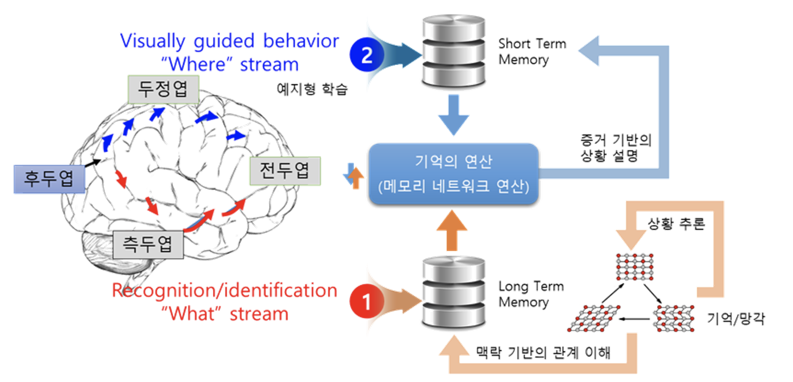

예지형 시각 지능 기술

기술문의: 문진영 책임연구원 (jymoon@etri.re.kr)
연구소개 동영상
연구내용
① 1단계(3년): 시각정보의 추상화 및 저장·복원 기술 개발
- 시각정보를 표현하고 검색하기 위한 시각언어 (Visual Language) 기술 개발, 시각정보의 추상화 및 기억 저장을 위한 시각 메모리 네트워크 개발
② 2단계(3년): 시각 메모리 네트워크 기반의 상황 추론·인지 기술 개발
- 장단기 시각 메모리 기반의 상황 인식 및 추론 기술 개발, 맥락 정보 융합을 통한 관계 이해 및 상황 인지 기술 개발
③ 3단계(2년): 증거 기반의 상황 예지형 시각지능 기술 개발
- 맥락 이해를 위한 증거 기반의 상황 디스크립션 기술 개발, 멀티모달 기반의 메타 학습을 통한 미래 상황 예측 기술 개발
연구실적(논문) - 탑티어 학술대회
Acknowledgement
This work was supported by Institute for Information &
Communications Technology Promotion (IITP) grant funded
by the Korea government (MSIT) [No.2020-0-00004, Development of Previsional Intelli- gence based on Long-term Visual Memory Network).].